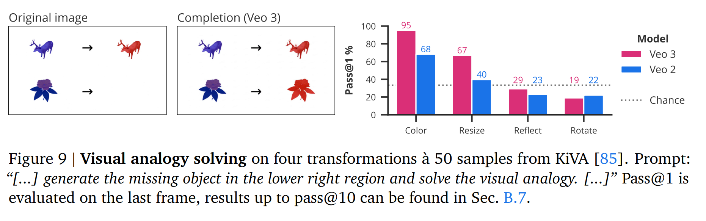
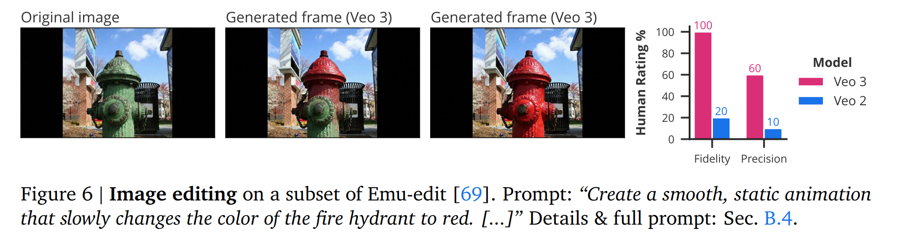
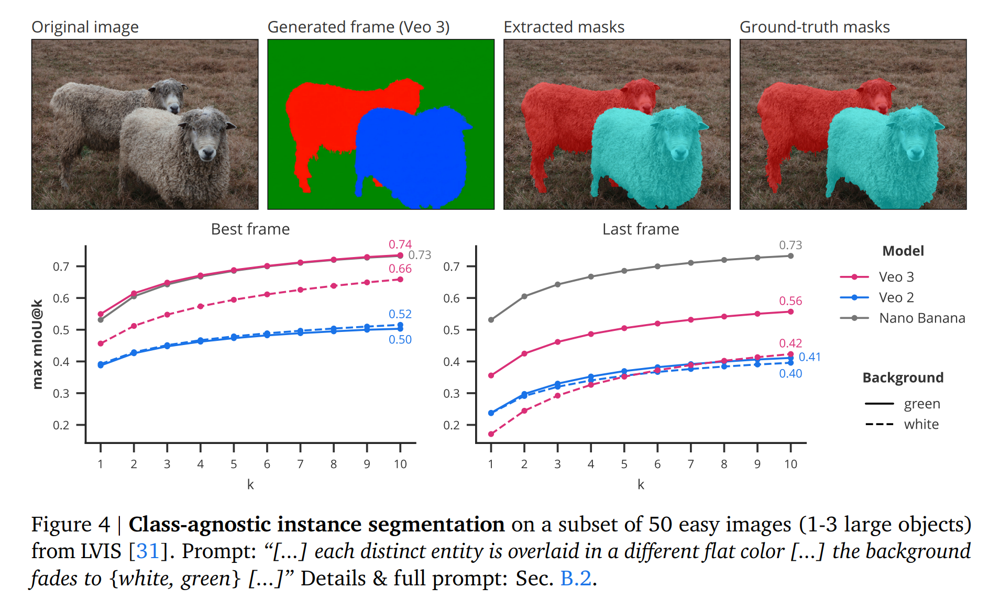

视频模型的零样本学习与推理
Video Models are Zero-shot Learners and Reasoners
这篇革命性论文证明了视频生成模型（特别是Veo 3）具有强大的零样本学习能力， 能够在没有专门训练的情况下解决广泛的视觉任务，展现出成为通用视觉基础模型的潜力。 一个模型，通过简单的文本提示，就能解决从图像编辑到视觉推理的各种复杂任务。

Veo 3零样本能力定性概览 - 展示模型在感知、建模、操控和推理四个层次的综合能力
感知层 (Perception)
基础视觉理解能力，包括图像增强、目标检测、视觉搜索等任务。
模型具备了"看清楚世界"的基本能力，成功率达到50-100%。
就像给AI一双敏锐的眼睛，能够在复杂场景中准确识别和定位目标物体。
建模层 (Modeling)
理解物理世界规律的能力，包括物理属性理解、空间关系推理、状态记忆等。
模型不只是"看"，还能"理解"看到的东西，成功率为20-90%。
能够推理物体的浮力、重量、材质等物理特性。
操控层 (Manipulation)
主动改变视觉世界的能力，包括图像编辑、工具使用、场景合成等任务。
从被动观察转变为主动改造，成功率达到30-80%。
能够执行复杂的图像编辑操作和模拟机器人的精细动作。
推理层 (Reasoning)
最高层的视觉思维能力，包括迷宫求解、对称性理解、规则推导等复杂任务。
展现出"链式帧推理"(Chain-of-Frames)的能力，成功率为10-60%。
这是视频模型向通用视觉智能迈出的关键一步。

Veo 3零样本学习和推理示例 - 展示模型在各种复杂视觉任务上的出色表现
18,384
生成视频数量
69
总任务数量
50%
迷宫解决成功率
42%
对称性理解准确率

视觉类比解决 - 模型能够理解和应用视觉模式

视觉对称理解 - 识别和创建对称图案

迷宫求解 - 找到从起点到终点的最优路径

图像编辑 - 精确的姿态改变和对象操作

对象提取 - 准确分离前景和背景对象

类别无关实例分割 - 通用的对象分割能力

边缘检测 - 精确的图像边缘识别
1
极简研究方法
研究方法极其简单：给Veo 3一张图片和文本描述，让它生成8秒720p视频。
没有微调，没有特殊训练，只使用提示工程(Prompting)。
这种简洁的方法充分展现了预训练模型的强大泛化能力。
2
大规模系统评估
进行了史无前例的大规模评估：62个定性任务 + 7个定量任务，
每个任务测试12次计算成功率。总共生成了18,384个视频，
系统性地验证了视频模型的零样本学习能力。
3
快速性能提升
从Veo 2到Veo 3仅半年时间，性能实现了跨越式提升：
迷宫解决从8%提升到50%，
对称性理解从17%提升到42%。
这种快速进步暗示着通用视觉智能正在加速到来。
4
范式转变的意义
这项研究预示着视觉领域的重大范式转变：
从任务特化模型转向通用视觉智能，
从微调训练转向提示工程。
正如GPT改变了NLP领域，视频模型正在改变计算机视觉。
为什么视频模型如此强大？
丰富的训练数据：网络规模的视频数据包含了丰富的视觉世界知识；
生成式学习：通过预测下一帧，模型学会了世界的运行规律；
时空建模：视频天然包含时间和空间信息，更接近真实世界；
大规模参数：足够的模型容量存储复杂的视觉-语言映射关系。
历史意义与影响
这项研究标志着计算机视觉领域的范式转变：
从需要为每个任务专门训练模型，到一个通用模型解决多种任务；
从复杂的数据收集和模型训练，到简单的自然语言描述。
视频模型正在成为视觉领域的"GPT时刻"。
局限性与未来方向
虽然成果令人瞩目，但模型仍存在局限：
精确深度估计困难、复杂物理推理能力有限、抽象推理表现待提升。
这些挑战为未来研究指明了方向，也展现了巨大的改进空间。
下一步发展将聚焦于提升推理精度和扩展任务覆盖范围。